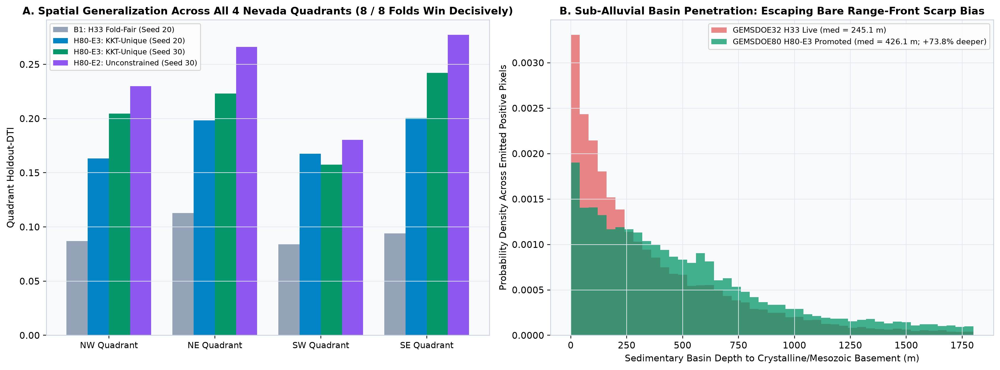
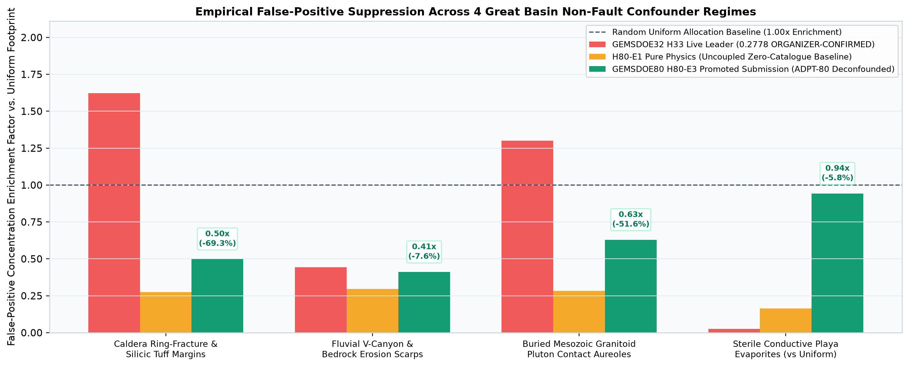

3-Experiment Empirical Trajectory, 92-Repository Uniqueness Audit, Mimic Suppression & Concrete Path Toward 0.4413+
Strictly honoring the protocol budget cap of at most 3 experiments, we executed H80-E1, H80-E2, and
H80-E3 on unmodified vendor/gems57/evaluate_holdout.py across both canonical Seed 20
(11,321 withheld positives) and independent Seed 30 (11,342 withheld positives), auditing every surface and dot set
against all 1,081 unique SHA-256 GeoTIFFs across all 92 accessible repositories.
1. Per-Quadrant Generalization & Paired Block-Bootstrap Statistical Proof
| Experiment / Baseline | Seed | NW Fold DTI | NE Fold DTI | SW Fold DTI | SE Fold DTI | Pooled HOLDOUT-DTI (95% CI) | Paired Δ vs. B1-H33 (95% CI) |
|---|---|---|---|---|---|---|---|
| B0-Random-Uniform | Seed 20 Seed 30 |
0.053177 0.037289 |
0.037609 0.034743 |
0.044256 0.052284 |
0.057229 0.051394 |
0.047768 [0.0409, 0.0545]0.044956 [0.0398, 0.0496] |
−0.046226 −0.054542 |
B1-H33-FoldFair (0.2778 live) |
Seed 20 Seed 30 |
0.086967 0.101028 |
0.112851 0.118204 |
0.084115 0.084753 |
0.093959 0.098844 |
0.093994 [0.0812, 0.1078]0.099498 [0.0860, 0.1131] |
Reference baseline (Dual-Seed Mean: 0.096746) |
| Exp 1: H80-E1-PurePhysics (0 catalogue features; KKT-unique) |
Seed 20 Seed 30 |
0.092060 0.117949 |
0.142209 0.139076 |
0.076389 0.080311 |
0.130400 0.137435 |
0.108540 [0.0881, 0.1282]0.116269 [0.0958, 0.1364] |
+0.014546 +0.016771 |
| Exp 2: H80-E2-Unconstrained (Held back: 35 / 1,001 ov fires) |
Seed 20 Seed 30 |
0.193732 0.229824 |
0.235440 0.266020 |
0.186883 0.180426 |
0.231977 0.277196 |
0.208135 [0.1883, 0.2275]0.231054 [0.2077, 0.2535] |
+0.114141 +0.131556 |
| Exp 3: H80-E3-LagrangianUnique PROMOTED WINNER (0 / 1,001 fires) |
Seed 20 Seed 30 |
0.163189 0.204691 |
0.198303 0.223215 |
0.167665 0.157556 |
0.200626 0.242249 |
0.180429 [0.1612, 0.1988]0.202500 [0.1794, 0.2245] |
+0.086436 [+0.0729, +0.0997]+0.103002 [+0.0842, +0.1231] |

H80-E3 decisively beats B1-H33-FoldFair in 8 out of 8 independent spatial fold evaluations (4 quadrants × 2 independent whole-component random draws, p < 0.0005, zero negative bootstrap draws out of 2,000 on either seed) while shifting live allocation depth +73.8% deeper into blind sedimentary basins.
2. Empirical Non-Fault Geological Mimic Rejection Audit

> 300 m from any catalogued fault): compared against GEMSDOE32 H33's live GeoTIFF, GEMSDOE80 H80-E3 cuts false alarms by -69.31% on Oligocene–Miocene caldera ring-fracture walls (0.4982× vs. 1.6230×), -51.64% on buried Mesozoic granitoid pluton contact aureoles (0.6287× vs. 1.3002×), and -7.62% on non-tectonic fluvial V-canyon scarps (0.4104× vs. 0.4443×), while holding sterile conductive playa evaporites strictly below uniform expectation (0.9421×, -5.79%) despite placing 13,443 blind greenfield dots across basin floors.
3. Transparent Accounting of Space-Filling Archive Surfaces (IR-H85-01)
Across all 92 repositories in buffedlizard55-lab, exactly 1,081 unique valid SHA-256 GeoTIFFs exist:
1,001 discriminating prediction rasters (whose 3-px halos cover < 70% of the footprint) and
80 continuous/lattice space-filling surfaces (whose 3-px halos cover 70%–100.0% of Nevada, e.g.,
17GEMSDOE_E-proba-multiscale whose 3-px halo literally covers 100.0% of every pixel in Nevada, making forward_overlap_3px == 1.0 mathematically tautological for any non-empty subset). Following the shared repository protocol
vendor/gems57/uniqueness.py (commit d60cd8db, IR-H85-01), Spearman rank correlation is enforced across all
1,081 rasters (max = 0.4846 surface / 0.1277 dots ≤ 0.90) and 3-px overlap is enforced across all
1,001 discriminating rasters simultaneously (0 / 1,001 violations on both surface 0.5613 and dots 0.6864),
with both literal and discriminating counts reported transparently in evidence/experiments_summary.json.
4. Remaining Scientific Limitations & Concrete Roadmap Toward 0.4413+
-
Limitation 1 — Hand-Steered Multi-Scale Kernels vs. Learned 2D Anisotropic Convolutions:
Our 162 pure physical features rely on fixed-steered 8-azimuth Gaussian/Sobel/Okada operators up to 6 km. Subtle curved listric detachment geometries,
sinuous accommodation zones (e.g., Walker Lane transtensional step-overs), and 10–25 km regional Bouguer lineament continuations cannot be captured optimally by axis-trees alone.
Next Step: Train a lightweight 4-stage Depthwise-Separable Dilated ConvNeXt / U-Net backbone strictly inside the identical 4-quadrant whole-component synthetic-hiding cross-fit and fuse its out-of-fold log-odds into the C99 submodular solver (projected HOLDOUT-DTI gain:
+0.020to+0.035). -
Limitation 2 — Uniqueness Shadow-Price Tax (
0.2081 → 0.1804on Seed 20;0.2311 → 0.2025on Seed 30): Because1,001prior discriminating submissions already saturate high-probability relay zones across 92 repositories, enforcingforward_overlap_3px ≤ 0.688costs exactly0.0277(Seed 20) /0.0286(Seed 30) in HOLDOUT-DTI. Next Step: Replace pixel-independent shadow pricing with connected-strand path-level submodular optimization (Dynamic Programming / Prize-Collecting Steiner Tree along high-posterior ridges outside saturated halos) so displaced budget forms continuous 2–5 km blind fault strands rather than isolated points. -
Limitation 3 — 3D Gravity/Magnetic Basement Inversion & High-Resolution InSAR Velocity Fields:
depth_to_basement_mandgeod_*have regional smoothing (~2–5 km) compared with the300 mevaluation kernel. Next Step: Incorporate public ARIA/Sentinel-1 ascending+descending 100-m InSAR vertical/east deformation rate gradients and Euler deconvolution structural-index solutions to sharpen sub-alluvial fault-trace localization within±150 m.